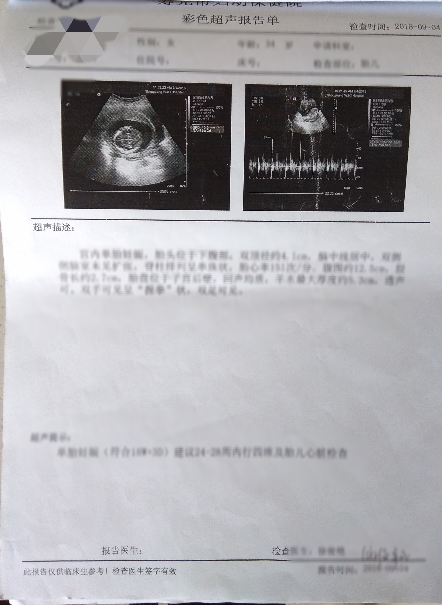
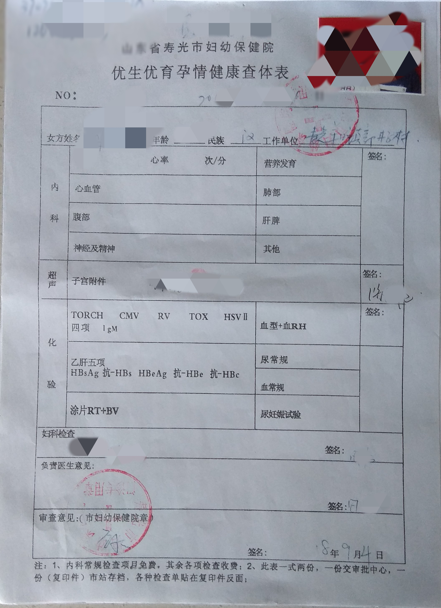
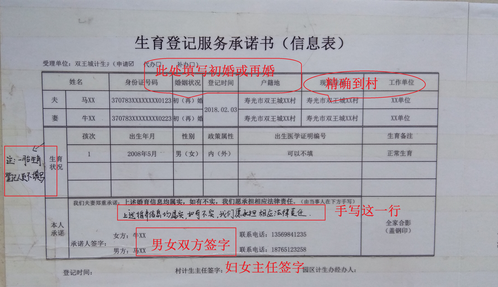
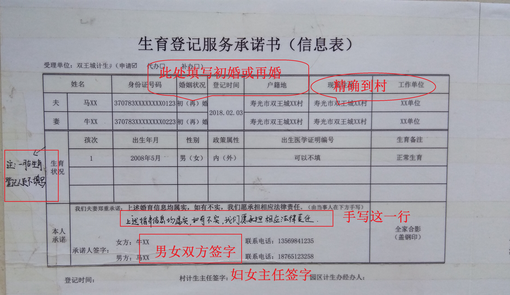

1.是否符合落入计生关系条件
①女方有工作单位优先往单位落计生关系。
②在寿光长期居住的由男方户籍地管理，其他情况女方户籍地管理。
①女方有工作单位优先往单位落计生关系。
②在寿光长期居住的由男方户籍地管理，其他情况女方户籍地管理。
2.准备夫妻双方身份证复印件，户口本（索引页和个人页）复印件，结婚证复印件，
（再婚人员需提供离婚证离婚协议复印件或民事调解书复印件或法院判决书复印件）
3.夫妻双方婚育证明。
婚育证明电子版
女方需要到原户籍地开婚育证明。
男方需要到户籍地开婚育证明。
将婚育证明电子版下载打印，村支书、村妇女主任（牛头镇村需要分村、总村妇女主任签字）签字，盖村委公章。
婚育证明电子版
女方需要到原户籍地开婚育证明。
男方需要到户籍地开婚育证明。
将婚育证明电子版下载打印，村支书、村妇女主任（牛头镇村需要分村、总村妇女主任签字）签字，盖村委公章。
4.夫妻双方2寸近期红底夫妻合照共需4张（与结婚证上的照片差不多），
两张去济生医院查体使用，两张办生育登记使用。
5. 到双王城北楼1楼117填写家庭档案，在双王城北楼3楼计生站领母子健康手册，
然后到济生医院查体。
查体注意事项：
夫妇双方清晨空腹（不吃不喝）
查体材料：家庭档案、母子健康手册、双方结婚证、
双方身份证、照片2张。
按照查体流程查体，查体结束后
须将档案交回优生查体中心信息采集室。
查体完成后，需要带回 1张优生优育健康查体表、1张彩超单，如下图。


6.下载打印并填写生育登记服务承诺书（夫妻双方本人签字及妇女主任（牛头镇村需要分村、总村妇女主任）签字）
生育登记服务承诺书电子版 
生育登记服务承诺书电子版 
7.将上述复印件，婚育证明，照片，查体表，彩超单，承诺书等材料交回双王城北楼三楼，然后女方到一楼117录信息。
8.怀孕8个月凭身份证来双王城三楼领生育服务手册再去117查体。
注意事项：
1. 办理一孩、二孩生育登记后每年的3、6、9、12月到计生办查体， 怀孕8个月以上不需要查体，周六日不上班。 在寿光居住的可以到寿光妇幼保健院南楼四楼查体。
2. 有生育计划的可到双王城北楼1楼117免费领取叶酸。
3. 查出孕情后，当周来计生办上报孕情。
4. 怀孕3-4个半月到妇幼保健院进行免费唐氏筛查。
5. 因特殊情况流产，必须到计生办开证明。
6. 因不按时查体导致不能维护生育服务手册，产生的后果本人自行承担。
计生办电话:0536-5561007.
1. 办理一孩、二孩生育登记后每年的3、6、9、12月到计生办查体， 怀孕8个月以上不需要查体，周六日不上班。 在寿光居住的可以到寿光妇幼保健院南楼四楼查体。
2. 有生育计划的可到双王城北楼1楼117免费领取叶酸。
3. 查出孕情后，当周来计生办上报孕情。
4. 怀孕3-4个半月到妇幼保健院进行免费唐氏筛查。
5. 因特殊情况流产，必须到计生办开证明。
6. 因不按时查体导致不能维护生育服务手册，产生的后果本人自行承担。
计生办电话:0536-5561007.